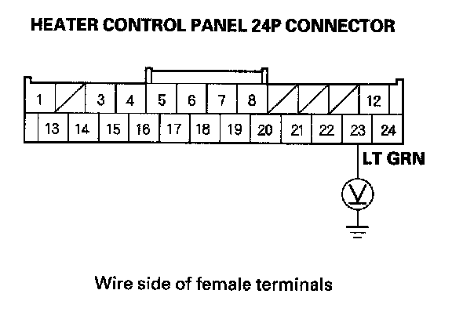
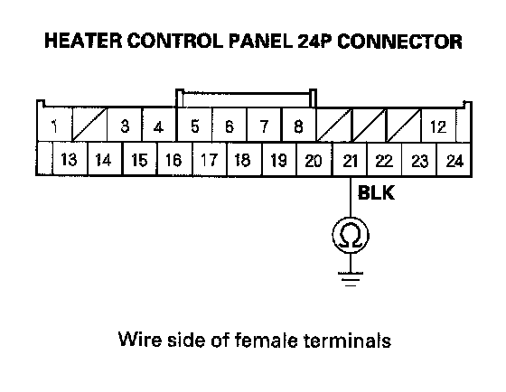

Heater Control Power and Ground Circuit Troubleshooting
Heater Control Power and Ground Circuit Troubleshooting1. Check the No. 36 (10 A) fuse in the under-dash fuse/relay box.
Is the fuse OK?
YES - Go to step 2.
NO - Replace the fuse, and recheck. If the fuse blows again, check for a short in the No. 36 (10 A) fuse circuit.
2. Disconnect the heater control panel 24P connector.
3. Turn the ignition switch ON (II).

4. Measure the voltage between the heater control panel 24P connector terminal No. 23 and body ground.
Is there battery voltage?
YES - Go to step 5.
NO - Repair open in the wire between the No. 36 (10 A) fuse in the under-dash fuse/relay box and the heater control panel.
5. Turn the ignition switch OFF.

6. Check for continuity between the heater control panel 24P connector terminal No. 21 and body ground.
Is there continuity?
YES - Check for loose wires or poor connections at the heater control panel 24P connector. If the connections are good, substitute a known-good heater control panel, and recheck.
NO - Check for an open in the wire between the heater control panel and body ground. If the wire is OK, check for poor ground at G504.